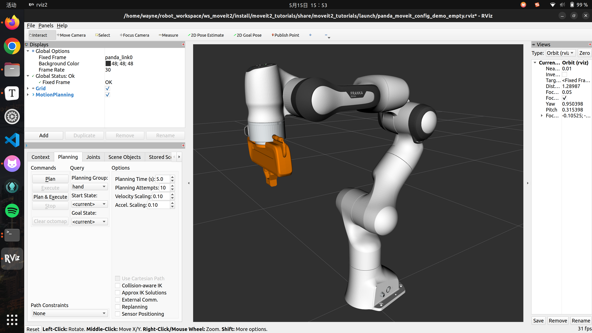
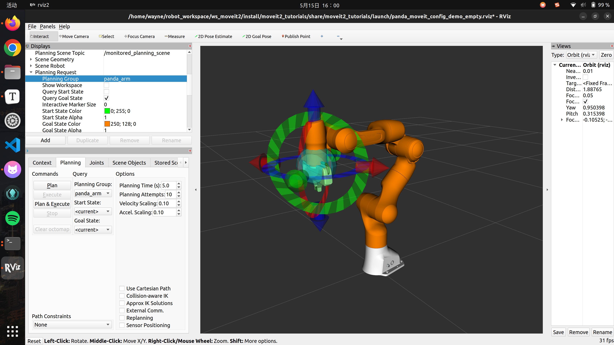
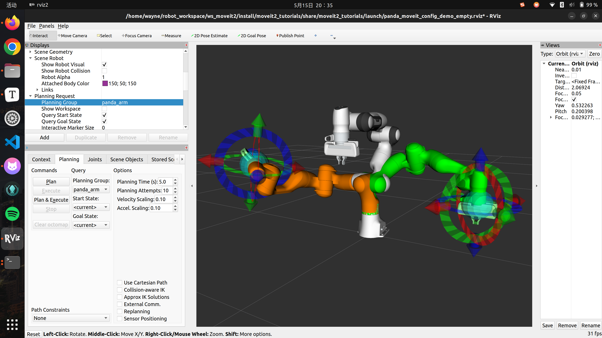
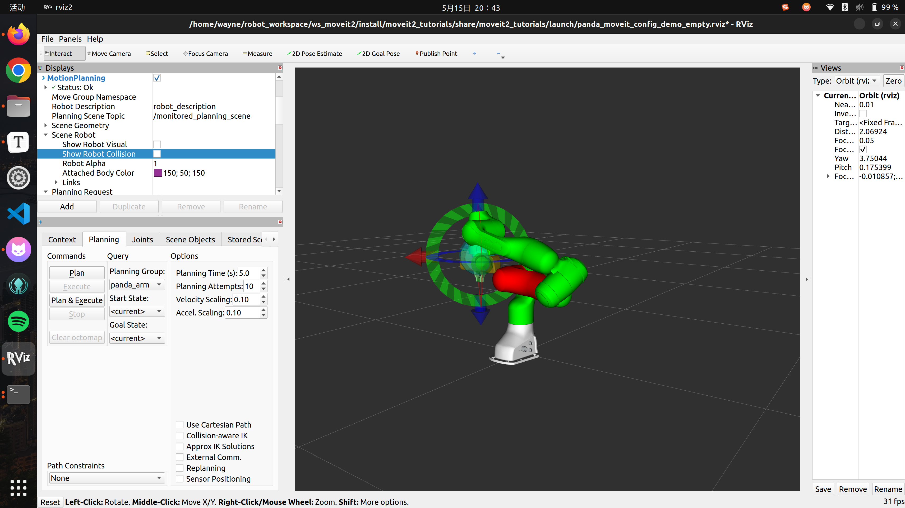
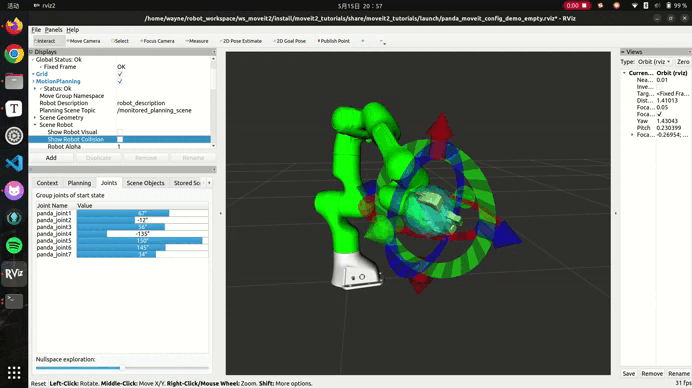
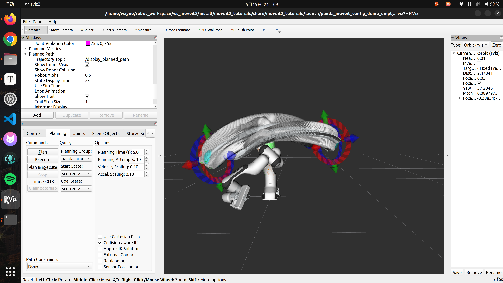
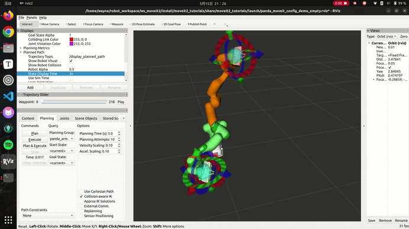
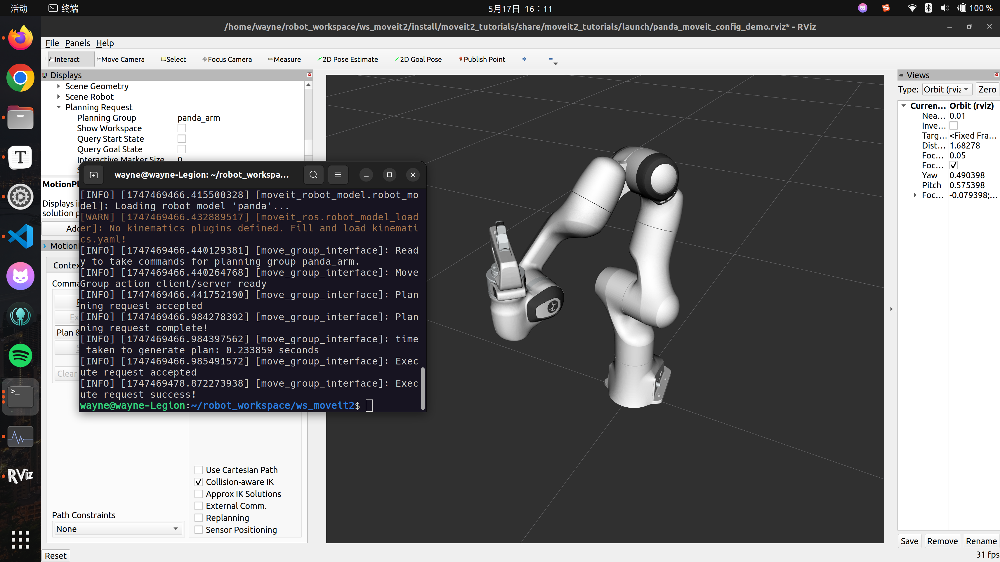
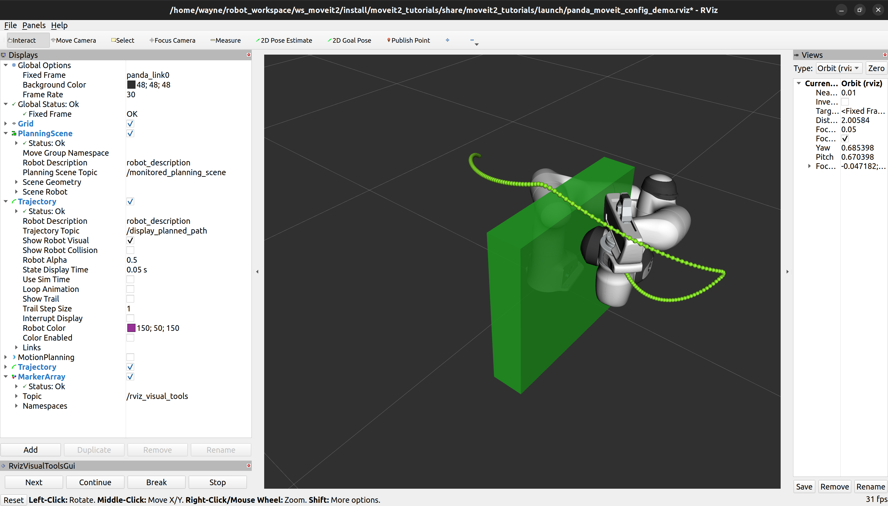
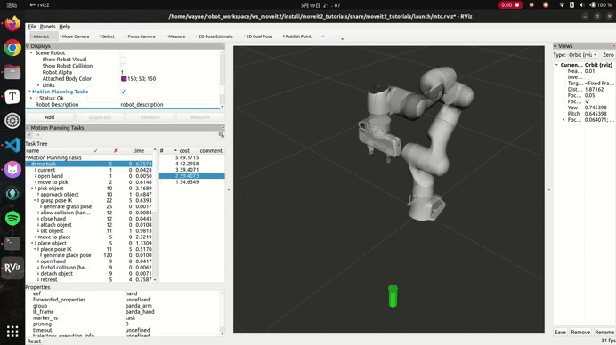

Moveit2
初期准备
安装之前先确定以下内容已经配置完全：
Bash source /opt/ros/humble/setup.bash
apt install python3-rosdep
# make sure you have the most up to date packages
rosdep init
update
apt update
apt dist-upgrade
# Install vcstool
apt install python3-vcstool
创建工作区并下载示例
设置colcon工作区（我将其设置在~/robot_workspace/下了）
Bash -p ~/ws_moveit2/src
# mkdir -p ~/robot_workspace/ws_moveit2/src
下载MoveIt和教程
Bash cd ~/ws_moveit2/src
clone --branch humble https://github.com/ros-planning/moveit2_tutorials
import < moveit2_tutorials/moveit2_tutorials.repos
构建工作区
构建工作区：
Bash apt update && rosdep install -r --from-paths . --ignore-src --rosdistro $ROS_DISTRO -y
接下来这一步很关键，从源码构建moveit
Bash build --mixin release
官方文档说建议计算机内存至少32GB，如果内存不足建议在上述命令末尾加一个参数：--parallel-workers 1。我为ubuntu22.04配置了16G的内存，加参数尝试构建了一下结果到16/55个包时就崩溃了。询问GPT建议我设置交换空间，于是尝试了下面这个方法：
Bash -h # 查看当前内存和交换空间使用情况
-s # 查看已启用的交换空间
fallocate -l 8G /swapfile # 创建8GB大小的交换文件
chmod 600 /swapfile # 设置权限，防止普通用户访问
mkswap /swapfile # 将文件格式化为交换空间
swapon /swapfile # 启用交换空间
# 验证交换空间
-h # 应该看到swap空间增加了4GB
-s # 应该显示/swapfile已启用
nano /etc/fstab
# 将这一行加在文件末尾
none swap defaults 0 0
#### 删除交换空间 #####
swapoff /swapfile # 停用当前交换文件
rm /swapfile # 删除旧的8G交换文件
第一次设置了8G，但是到33/55个包时再次崩溃，之后增加到16G就完成编译了。不过在最后一次编译过程中我查看交换空间使用情况时却发现并没有使用。也有可能不设置交换空间多次编译也能完成？
之后我colcon build整个项目时打开系统监视器实时观察，发现确实交换空间被使用了，起到了作用
设置工作区
Bash source ~/ws_moveit2/install/setup.bash
echo 'source ~/ws_moveit2/install/setup.bash' >> ~/.bashrc
Switch to Cyclone DDS
Bash apt install ros-humble-rmw-cyclonedds-cpp
# You may want to add this to ~/.bashrc to source it automatically
export RMW_IMPLEMENTATION = rmw_cyclonedds_cpp
在Rviz中快速上手MoveIt
RViz 和 MoveIt Display 插件在 MoveIt 中创建运动规划（Panda机器人）
Step 1: 启动demo并配置插件
Bash launch moveit2_tutorials demo.launch.py rviz_config:= panda_moveit_config_demo_empty.rviz
运行后rviz启动，点击add选择MotionPlanning，就可以看到panda机器人了

加载 Motion Planning Plugin 后，我们可以对其进行配置。在 “Displays” 子窗口的 “Global Options” 选项卡中，将 Fixed Frame 字段设置为 /panda_link0
现在就可以开始为Panda配置插件。单击“Displays”中的“MotionPlanning”：
Robot Description 字段设置为 robot_descriptionPlanning Scene Topic 字段设置为 /monitored_planning_scenePlanned Path 下的 Trajectory Topic 设置为 /display_planned_pathPlanning Request 中，将 Planning Group 更改为 panda_arm

Step 2: 机器人的显示方法
有四种可视化：
/monitored_planning_scene 规划环境中的 robot 配置（默认处于活动状态）
机器人的路径规划（默认处于活动状态）
机器人的绿色部分表示运动规划的开始状态
机器人的橙色部分表示运动规划的目标状态
这些可视化设置都可以在Motionplaning面板中打开或关闭
Step3: 与机器人交互
在接下来的步骤中，我们只需要scene robot、开始状态和目标状态
Scene Robot 指 RViz 中显示的机器人模型，代表机器人在当前虚拟场景中的实时状态
选中 Planned Path 树菜单中的 Show Robot Visual 复选框
取消选中 Scene Robot 树菜单中的 Show Robot Visual 复选框
选中 Planning Request 树菜单中的 Query Goal State 复选框
选中 Planning Request 树菜单中的 Query Start State 复选框
现在应该有两个交互式标记。一个标记对应橙色手臂，将用于设置运动规划的“目标状态”，另一个标记对应绿色手臂，用于设置运动规划的“起始状态”。（点击rviz左上角的interact按钮就可以拖动机器人手臂了）

设置碰撞检测
对于本节，隐藏计划路径和目标状态，只显示起始状态（绿色着色的手臂）。尝试移动手臂使两个连杆相互碰撞，碰撞的连杆会变成红色

探索零空间
选择关节选项卡来移动单个关节和 7-DOF 机器人的冗余关节，例子中拖动滑块可以解出当末端固定时其他关节的位置解的集合

Step4: 对机器人进行运动规划
将起始状态移动到期望的位置
将目标状态移动到另一个期望的位置
这两个状态都不会与机器人本身发生碰撞
确保Planned Path is being visualized. 同时，在Planned Path 中勾选show trail复选框。
点击Planning 面板中的planing，就可以看到手臂移动的轨迹了

如果想看到动态的移动路径，可以在 RViz 中逐点可视化轨迹：
From “Panels ”(rviz左上角) menu, select “Trajectory - Trajectory Slider ”
设置目标姿态，然后plan
拖动滑块就可以看到动态的移动动作了

如果勾选Use Cartesian Path 复选框，机器人将尝试在笛卡尔空间中线性移动末端执行器。
第一个C++ MoveIt项目
本节主讲：
创建一个 ROS 2 软件包并编写第一个使用 MoveIt 的程序
学习如何使用 MoveGroupInterface 进行路径规划和执行移动
导航到 ws_moveit/src 目录，使用 ROS 2 命令行工具创建一个新的包：
Bash pkg create \
--build-type ament_cmake \
--dependencies moveit_ros_planning_interface rclcpp \
--node-name hello_moveit hello_moveit
输出显示在新的目录中创建了某些文件。注意我们添加了 moveit_ros_planning_interface 和 rclcpp 作为依赖项。这将在这 package.xml 和 CMakeLists.txt 文件中创建必要的更改，以便我们可以依赖这两个包
创建 ROS 节点和执行器
打开hello_moveit.cpp，可以修改为以下内容进行测试（也可以保留原始的输出测试文件）：
C++ #include <memory>
#include <rclcpp/rclcpp.hpp>
#include <moveit/move_group_interface/move_group_interface.h>
int main ( int argc , char * argv [])
{
// Initialize ROS and create the Node
rclcpp :: init ( argc , argv );
auto const node = std :: make_shared < rclcpp :: Node > (
"hello_moveit" ,
rclcpp :: NodeOptions (). automatically_declare_parameters_from_overrides ( true )
);
// Create a ROS logger
auto const logger = rclcpp :: get_logger ( "hello_moveit" );
// Next step goes here
// Shutdown ROS
rclcpp :: shutdown ();
return 0 ;
}
切换回工作区目录 ws_moveit2构建并运行
Bash build --mixin debug
source install/setup.bash
run hello_moveit hello_moveit
再次遇到colcon build，官方文档是直接build了整个项目，对内存要求极高，耗时长。所以我就只编译了我修改了的包：
Bash build --packages-select hello_moveit
这样就很轻松了
同时ros社区中发现一种方法可以减小爆内存的可能，取消并行（我用这种方法加上之前的16G交换空间成功了）：
Bash build --executor sequential
限制并行使用的线程数量也行，加上参数比如--parallel-workers 6，但我设置完成还是爆了，索性不用并行
在 colcon 构建系统里，--mixin 选项的作用是引用 CMake 配置文件，从而对构建过程加以控制
运行结果为正常退出程序
使用 MoveGroupInterface 进行规划和执行
将注释// Next step goes here下编写：
C++ // Create the MoveIt MoveGroup Interface
using moveit :: planning_interface :: MoveGroupInterface ;
auto move_group_interface = MoveGroupInterface ( node , "panda_arm" );
// Set a target Pose
auto const target_pose = []{
geometry_msgs :: msg :: Pose msg ;
msg . orientation . w = 1.0 ;
msg . position . x = 0.28 ;
msg . position . y = -0.2 ;
msg . position . z = 0.5 ;
return msg ;
}();
move_group_interface . setPoseTarget ( target_pose );
// Create a plan to that target pose
auto const [ success , plan ] = [ & move_group_interface ]{
moveit :: planning_interface :: MoveGroupInterface :: Plan msg ;
auto const ok = static_cast < bool > ( move_group_interface . plan ( msg ));
return std :: make_pair ( ok , msg );
}();
// Execute the plan
if ( success ) {
move_group_interface . execute ( plan );
} else {
RCLCPP_ERROR ( logger , "Planing failed!" );
}
构建，开个新终端source一下，ros2 launch moveit2_tutorials demo.launch.py启动rviz加载panda，再运行一下ros2 run hello_moveit hello_moveit
发现机器人会移动到这样的姿态：

在 RViz 中可视化
本教程将向您介绍一个工具，该工具可以帮助您更轻松地理解您的 MoveIt 应用程序正在做什么，通过在 RViz 中渲染可视化
在项目 hello_moveit 的 package.xml 中，将此行添加到其他 <depend> 语句之后：
XML <depend> moveit_visual_tools</depend>
然后在 CMakeLists.txt 中，将下列行添加到 find_package 语句部分：
CMake find_package ( moveit_visual_tools REQUIRED )
...
ament_target_dependencies (
hello_moveit
"moveit_ros_planning_interface"
"moveit_visual_tools"
"rclcpp"
)
最后在hello_moveit.cpp中添加头文件
C++ #include <moveit_visual_tools/moveit_visual_tools.h>
我使用的编辑器是VSCode，需要在.vscode/c_cpp_properties.json文件中添加头文件对应的路径：
JSON {
"configurations" : [
{
"name" : "Linux" ,
"includePath" : [
"${workspaceFolder}/**" ,
"/opt/ros/humble/include/**" ,
"/usr/include/eigen3"
],
...
}
这样vscode才能识别到cpp文件中包含的包
编写好之后colcon build一下
创建一个 ROS 执行器并在一个线程上运行节点
在初始化 MoveItVisualTools 之前，我们需要在我们的 ROS 节点上启动一个 executor，首先添加线程库：
C++ #include <thread> // <---- add this to the set of includes at the top
通过创建和命名记录器，可以使我们的程序日志保持有序
C++ // Create a ROS logger
auto const logger = rclcpp :: get_logger ( "hello_moveit" );
接下来，在创建 MoveIt MoveGroup 接口之前添加 executor:
C++ // Spin up a SingleThreadedExecutor for MoveItVisualTools to interact with ROS
rclcpp :: executors :: SingleThreadedExecutor executor ;
executor . add_node ( node );
auto spinner = std :: thread ([ & executor ]() { executor . spin (); });
// Create the MoveIt MoveGroup Interface
...
C++ // Shutdown ROS
rclcpp :: shutdown (); // <--- This will cause the spin function in the thread to return
spinner . join (); // <--- Join the thread before exiting
return 0 ;
build一下看看有没有语法错误
我直接对完成的代码进行解释
头文件
C++ #include <thread> // 多线程支持
#include <memory> // 智能指针
#include <rclcpp/rclcpp.hpp> // ROS 2核心库
#include <moveit/move_group_interface/move_group_interface.h> // MoveIt核心接口
#include <moveit_visual_tools/moveit_visual_tools.h> // 可视化工具
初始化ROS节点
C++ rclcpp :: init ( argc , argv ); // 初始化ROS 2
auto const node = std :: make_shared < rclcpp :: Node > ( // 创建节点
"hello_moveit" ,
rclcpp :: NodeOptions (). automatically_declare_parameters_from_overrides ( true )
);
创建执行器（Executor）
C++ rclcpp :: executors :: SingleThreadedExecutor executor ;
executor . add_node ( node );
auto spinner = std :: thread ([ & executor ]() { executor . spin (); });
使用单线程执行器处理ROS回调
单独线程运行执行器，避免阻塞主线程
创建MoveGroup接口
C++ auto move_group_interface = MoveGroupInterface ( node , "panda_arm" );
控制名为"panda_arm"的规划组（机械臂）
这是MoveIt的核心控制接口
可视化工具初始化
C++ moveit_visual_tools . deleteAllMarkers (); // 清除旧标记
moveit_visual_tools . loadRemoteControl (); // 加载远程控制面板
可视化工具配置
C++ auto const draw_title = [ & ]( auto text ) { /*...*/ }; // 在Rviz显示标题
auto const prompt = [ & ]( auto text ) { /*...*/ }; // 显示操作提示
auto const draw_trajectory_tool_path = [ & ]( auto trajectory ) { /*...*/ }; // 显示轨迹路径
设置目标位姿
C++ geometry_msgs :: msg :: Pose target_pose ;
target_pose . orientation . w = 1.0 ; // 默认朝向
target_pose . position . x = 0.28 ; // 目标位置坐标
target_pose . position . y = -0.2 ;
target_pose . position . z = 0.5 ;
move_group_interface . setPoseTarget ( target_pose );
运动规划
C++ auto const [ success , plan ] = [ & ]{
moveit :: planning_interface :: MoveGroupInterface :: Plan msg ;
bool ok = static_cast < bool > ( move_group_interface . plan ( msg ));
return std :: make_pair ( ok , msg );
}();
调用MoveIt的规划算法生成运动路径
返回规划结果（成功/失败）和路径详情
执行规划
C++ if ( success ) {
draw_trajectory_tool_path ( plan . trajectory_ ); // 可视化路径
move_group_interface . execute ( plan ); // 实际执行运动
} else {
RCLCPP_ERROR ( logger , "Planning failed!" ); // 错误处理
}
关闭流程
C++ rclcpp :: shutdown (); // 关闭ROS
spinner . join (); // 等待线程结束
在 RViz 中启用可视化
编写好上述代码后，build一下，开启一个新的终端ros2 launch moveit2_tutorials demo.launch.py，启动rviz
现在我们已经不需要MotionPlanning模块了，在display中取消勾选，在panel中添加RvizVisualToolsGui
在display中add Marker Array来渲染我们添加的可视化，在Marker Array中编辑topic为 /rviz_visual_tools
最后在新的终端中ros2 run hello_moveit hello_moveit，在rviz中点击next就可以看到机械臂的轨迹规划了
围绕物体进行规划
本节介绍如何将物体插入到规划场景中，并围绕它们进行规划
先添加一个头文件
C++ #include <moveit/planning_scene_interface/planning_scene_interface.h>
为了展示“避开物体”的效果，对机器人目标姿态进行更改msg.position.y = 0.4;
创建一个碰撞对象：
C++ // Create collision object for the robot to avoid
auto const collision_object = [ frame_id =
move_group_interface . getPlanningFrame ()] {
moveit_msgs :: msg :: CollisionObject collision_object ;
collision_object . header . frame_id = frame_id ;
collision_object . id = "box1" ;
shape_msgs :: msg :: SolidPrimitive primitive ;
// Define the size of the box in meters
primitive . type = primitive . BOX ;
primitive . dimensions . resize ( 3 );
primitive . dimensions [ primitive . BOX_X ] = 0.5 ;
primitive . dimensions [ primitive . BOX_Y ] = 0.1 ;
primitive . dimensions [ primitive . BOX_Z ] = 0.5 ;
// Define the pose of the box (relative to the frame_id)
geometry_msgs :: msg :: Pose box_pose ;
box_pose . orientation . w = 1.0 ;
box_pose . position . x = 0.2 ;
box_pose . position . y = 0.2 ;
box_pose . position . z = 0.25 ;
collision_object . primitives . push_back ( primitive );
collision_object . primitive_poses . push_back ( box_pose );
collision_object . operation = collision_object . ADD ;
return collision_object ;
}();
将上面这个对象添加到scene中：
C++ // Add the collision object to the scene
moveit :: planning_interface :: PlanningSceneInterface planning_scene_interface ;
planning_scene_interface . applyCollisionObject ( collision_object );
和上一节一样进行rviz可视化即可发现机器人避开了障碍运动到了对应位置

使用 MoveIt 任务构造器进行拾取和放置
本节将创建一个包，该包使用 MoveIt 任务构造器规划拾取和放置操作
下载 MoveIt 任务构造器
Bash cd ~/ws_moveit2/src
clone https://github.com/ros-planning/moveit_task_constructor.git -b humble
从源码创建新包mtc_tutorial
Bash pkg create --build-type ament_cmake --node-name mtc_tutorial mtc_tutorial
完善package.xml和CMakeLists.txt中的依赖项
XML <depend> moveit_task_constructor_core</depend>
<depend> rclcpp</depend>
CMake ...
find_package ( moveit_task_constructor_core REQUIRED )
find_package ( rclcpp REQUIRED )
...
设置 MoveIt 任务构造器项目
本节使用 MoveIt Task Constructor 构建最小任务所需的代码
一步步解读代码的各个部分：
头文件部分
C++ #include <rclcpp/rclcpp.hpp> // ROS 2核心库
#include <moveit/planning_scene/planning_scene.h> // 规划场景管理
#include <moveit/planning_scene_interface/planning_scene_interface.h> // 规划场景操作接口
#include <moveit/task_constructor/task.h> // MTC任务核心
#include <moveit/task_constructor/solvers.h> // 规划算法库
#include <moveit/task_constructor/stages.h> // 任务阶段定义
// 处理不同ROS版本的tf2头文件包含问题
#if __has_include(<tf2_geometry_msgs/tf2_geometry_msgs.hpp>)
#include <tf2_geometry_msgs/tf2_geometry_msgs.hpp>
#else
#include <tf2_geometry_msgs/tf2_geometry_msgs.h>
#endif
// 同上处理Eigen转换头文件
#if __has_include(<tf2_eigen/tf2_eigen.hpp>)
#include <tf2_eigen/tf2_eigen.hpp>
#else
#include <tf2_eigen/tf2_eigen.h>
#endif
关键点 ：这些头文件引入了MoveIt Task Constructor（MTC）的核心组件，MTC是MoveIt的高级任务规划框架
- 特别说明 ：__has_include用于处理不同ROS版本的兼容性问题
日志与命名空间
C++ static const rclcpp :: Logger LOGGER = rclcpp :: get_logger ( "mtc_tutorial" );
namespace mtc = moveit :: task_constructor ; // 命名空间别名
作用 ：创建专用的日志记录器，简化MTC命名空间的使用
类声明
C++ class MTCTaskNode {
public :
MTCTaskNode ( const rclcpp :: NodeOptions & options );
rclcpp :: node_interfaces :: NodeBaseInterface :: SharedPtr getNodeBaseInterface ();
void doTask ();
void setupPlanningScene ();
private :
mtc :: Task createTask ();
mtc :: Task task_ ;
rclcpp :: Node :: SharedPtr node_ ;
};
核心成员 ：
- task_：MTC任务容器
- node_：ROS 2节点
- 关键方法 ：
- createTask()：构建任务流水线
- doTask()：执行任务
- setupPlanningScene()：设置场景物体
构造函数与节点接口
C++ MTCTaskNode :: MTCTaskNode ( const rclcpp :: NodeOptions & options )
: node_ { std :: make_shared < rclcpp :: Node > ( "mtc_node" , options ) }
{}
rclcpp :: node_interfaces :: NodeBaseInterface :: SharedPtr MTCTaskNode :: getNodeBaseInterface () {
return node_ -> get_node_base_interface ();
}
功能 ：创建名为"mtc_node"的ROS节点，提供节点基础接口用于执行器管理
场景设置
C++ void MTCTaskNode::setupPlanningScene () {
moveit_msgs :: msg :: CollisionObject object ;
object . id = "object" ;
object . header . frame_id = "world" ;
object . primitives . resize ( 1 );
object . primitives [ 0 ]. type = shape_msgs :: msg :: SolidPrimitive :: CYLINDER ;
object . primitives [ 0 ]. dimensions = { 0.1 , 0.02 }; // 高0.1m，半径0.02m
geometry_msgs :: msg :: Pose pose ;
pose . position . x = 0.5 ;
pose . position . y = -0.25 ;
pose . orientation . w = 1.0 ;
object . pose = pose ;
moveit :: planning_interface :: PlanningSceneInterface psi ;
psi . applyCollisionObject ( object );
}
作用 ：在场景中添加一个圆柱体障碍物
- 参数说明 ：
- 位置：(0.5, -0.25, 0)（z默认为0）
- 尺寸：高10cm，半径2cm的细长圆柱
- 应用场景 ：可用于抓取/避障任务中的目标物体
任务执行流程
C++ void MTCTaskNode::doTask () {
task_ = createTask (); // 构建任务
try { task_ . init (); } // 初始化任务
catch (...) { /* 错误处理 */ }
if ( ! task_ . plan ( 5 )) { // 尝试5次规划
RCLCPP_ERROR (...);
return ;
}
task_ . introspection (). publishSolution (...); // 发布可视化结果
auto result = task_ . execute (...); // 执行规划
if ( result != SUCCESS ) { /* 错误处理 */ }
}
流程解析 ：
1. 创建任务结构
2. 初始化任务各阶段
3. 进行运动规划（最多尝试5次）
4. 可视化规划结果
5. 执行规划路径
任务构建（核心部分）
C++ mtc :: Task MTCTaskNode::createTask () {
mtc :: Task task ;
task . stages () -> setName ( "demo task" );
task . loadRobotModel ( node_ ); // 加载机器人模型
// 设置任务属性
task . setProperty ( "group" , "panda_arm" ); // 规划组
task . setProperty ( "eef" , "hand" ); // 末端执行器组
task . setProperty ( "ik_frame" , "panda_hand" ); // 逆解参考坐标系
// 添加当前状态阶段
auto stage_state_current = std :: make_unique < mtc :: stages :: CurrentState > ( "current" );
task . add ( std :: move ( stage_state_current ));
// 定义规划器
auto sampling_planner = std :: make_shared < mtc :: solvers :: PipelinePlanner > ( node_ );
auto interpolation_planner = std :: make_shared < mtc :: solvers :: JointInterpolationPlanner > ();
// 笛卡尔路径规划器配置
auto cartesian_planner = std :: make_shared < mtc :: solvers :: CartesianPath > ();
cartesian_planner -> setMaxVelocityScalingFactor ( 1.0 ); // 最大速度比例
cartesian_planner -> setMaxAccelerationScalingFactor ( 1.0 ); // 最大加速度比例
cartesian_planner -> setStepSize ( .01 ); // 路径点间隔
// 添加手部张开阶段
auto stage_open_hand = std :: make_unique < mtc :: stages :: MoveTo > ( "open hand" , interpolation_planner );
stage_open_hand -> setGroup ( "hand" );
stage_open_hand -> setGoal ( "open" ); // 使用预定义的"open"姿态
task . add ( std :: move ( stage_open_hand ));
return task ;
}
关键组件 ：
- CurrentState：获取机器人当前状态
- MoveTo：移动到指定目标
- 规划器类型 ：
- PipelinePlanner：通用运动规划管道
- JointInterpolationPlanner：关节空间插值
- CartesianPath：笛卡尔空间路径规划
- 参数调优 ：速度/加速度缩放因子控制运动速度，步长影响路径精度
主函数
C++ int main ( int argc , char ** argv ) {
rclcpp :: init ( argc , argv );
rclcpp :: NodeOptions options ;
options . automatically_declare_parameters_from_overrides ( true );
auto mtc_task_node = std :: make_shared < MTCTaskNode > ( options );
rclcpp :: executors :: MultiThreadedExecutor executor ;
auto spin_thread = std :: make_unique < std :: thread > ([ & ]() {
executor . add_node ( mtc_task_node -> getNodeBaseInterface ());
executor . spin ();
executor . remove_node (...);
});
mtc_task_node -> setupPlanningScene (); // 设置场景
mtc_task_node -> doTask (); // 执行任务
spin_thread -> join ();
rclcpp :: shutdown ();
return 0 ;
}
执行流程 ：
1. 初始化ROS 2
2. 创建多线程执行器
3. 在新线程中运行节点
4. 设置场景并执行任务
5. 等待任务完成并清理资源
添加阶段
添加阶段实在是太多，还需要消化一下
可视化拾取过程
Bash launch moveit2_tutorials mtc_demo.launch.py
launch moveit2_tutorials pick_place_demo.launch.py

January 31, 2026
January 31, 2026